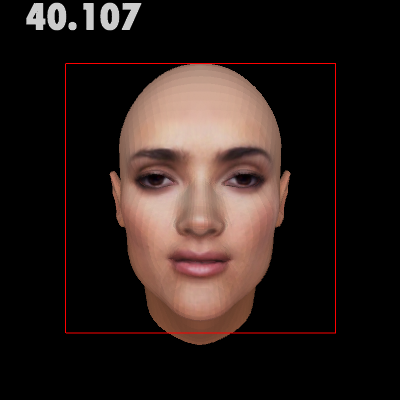
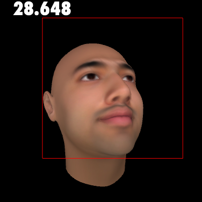
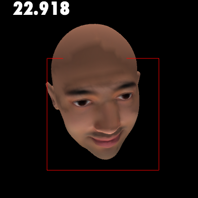

Face Synthesis & Detection
2010
This is work / research done for my Learning Bit by Bit class at ITP.
I used 3D models (in OBJ format) and OpenCV to explore face detection on synthesized faces.
The software
I wrote a sketch in Processing that loads models and then rotates the head from left to right. The numbers you see in the picture below are the angles (either positive or negative) at which face detection becomes impossible. At that point, the model is rotated the opposite direction, giving you a good idea of how well the detection works on any synthesized face. You can use the mouse to rotate the model up or down, as as seen in the last two pictures. You can also enable or disable the texture of the model, as well as turn off rotation. When faces are found, they are outlined by red rectangles.
You can see the source code by clicking here. You'll need the OpenCV and OBJ Loader libraries, which can be found on the Processing libraries page here.
Examples
Different models and lighting provide different results. A well-lit face pointing straight at the screen can be detected easily at a variety of angles.

Most of the features of this face are clear, and it can be detected easily as well.

The Viola-Jones detection method is robust, but falters slightly in this next example when the face is rotated so that some of the features are obscured.

OpenCV and Violia-Jones
While OpenCV is often used for detecting faces in real-time video feeds, detecting synthesized faces allows one to have a controlled environment for learning about the detection methods behind OpenCV.
OpenCV is based on the Viola-Jones object detection framework. For more information on it how it works and my face synthesis and detection findings, please download this PowerPoint PPT used in my presentation.